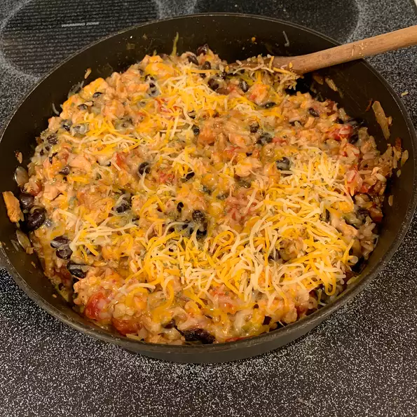

burrito

Chicken, black beans, zesty tomatoes and taco seasoning cooked together with brown rice for an easy burrito skillet topped with cheese.
Ingredients
- 2 tablespoons Wesson® Pure Canola Oil
- 1 pound boneless skinless chicken breasts, cut into bite-size pieces
- ½ cup chopped yellow onion
- 2 tablespoons taco seasoning mix
- 1 (15 ounce) can Rosarita® Premium Whole Black Beans, drained, rinsed
- 1 (10 ounce) can Ro*Tel® Original Diced Tomatoes & Green Chilies, undrained
- 1 cup water
- 1 ¼ cups instant brown rice, uncooked
- 1 cup shredded Cheddar and Monterey Jack cheese blend
- 1 teaspoon Chopped cilantro
Steps
- Heat oil in large skillet over medium-high heat. Add chicken and cook 3 minutes, stirring occasionally. Add onion and taco seasoning; cook 2 minutes more. Stir in black beans, undrained tomatoes and water; bring to a boil.
- Stir in rice. Cover, reduce heat and simmer 7 to 10 minutes or until rice is tender. Stir in 1/2 cup cheese. Sprinkle top with remaining cheese and cilantro, if desired.